Introduction¶
Motion planning plans the state sequence of the robot without conflict between the start and goal.
Motion planning mainly includes Path planning and Trajectory planning.
Path Planning: It's based on path constraints (such as obstacles), planning the optimal path sequence for the robot to travel without conflict between the start and goal.Trajectory planning: It plans the motion state to approach the global path based on kinematics, dynamics constraints and path sequence.
The theory analysis can be found at motion-planning.
We also provide ROS C++ version and Matlab version.
This repository provides the implementations of common Motion planning algorithms. Your stars and forks are welcome. Submitting pull requests or joining our development team are also welcome. For trivial modification, please directly contribute to dev branch. For big modification, please contact us before you contribute.
Quick Start¶
Overview¶
The source file structure is shown below
python_motion_planning
├─common
| ├─env
| | ├─map
| | ├─robot
| | └─world
| ├─utils
| └─visualizer
├─controller
| └─path_tracker
├─path_planner
| ├─graph_search
| └─sample_search
└─curve_generation
Install¶
(Optional) The code was tested in python=3.10, though other similar versions should also work. We recommend using conda to install the dependencies.
To install the repository, please run the following command in shell.
Run¶
Please refer to the Tutorials part of online documentation.
Demos¶
Path Planner¶
| Planner | 2D Grid | 3D Grid |
|---|---|---|
| GBFS | Implemented in V1.1.1, not migrated | Not implemented |
| Dijkstra | 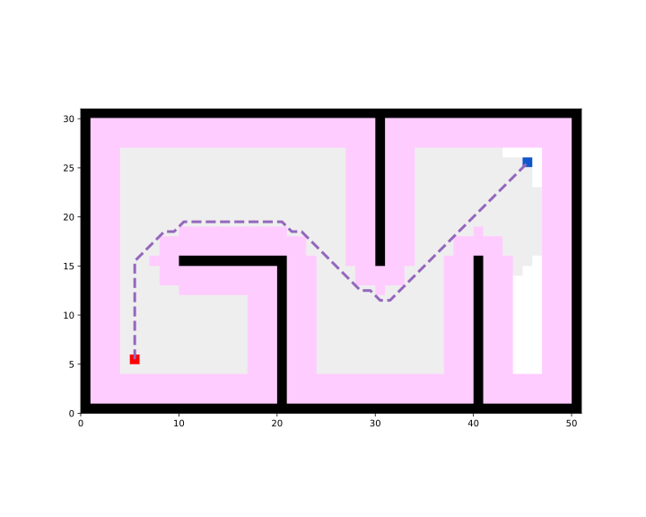 | 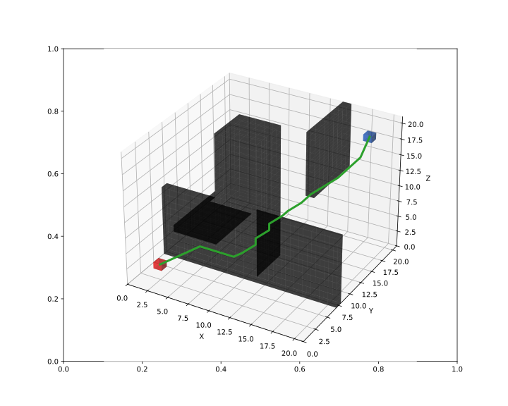 |
| A* | 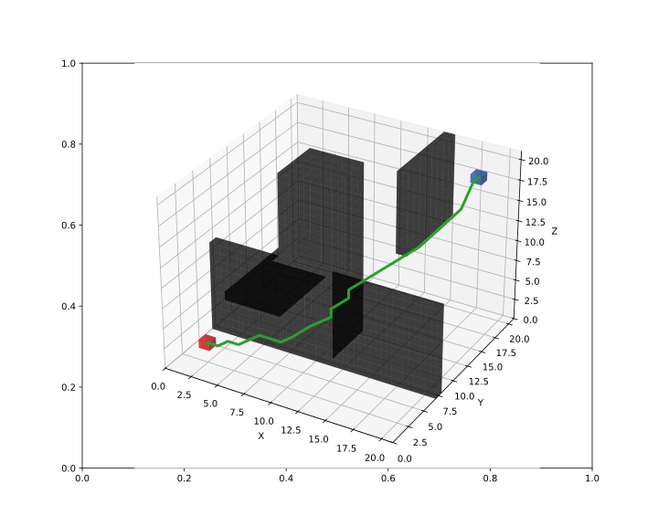 | |
| JPS | Implemented in V1.1.1, not migrated | Not implemented |
| D* | Implemented in V1.1.1, not migrated | Not implemented |
| LPA* | Implemented in V1.1.1, not migrated | Not implemented |
| D* Lite | Implemented in V1.1.1, not migrated | Not implemented |
| Theta* | 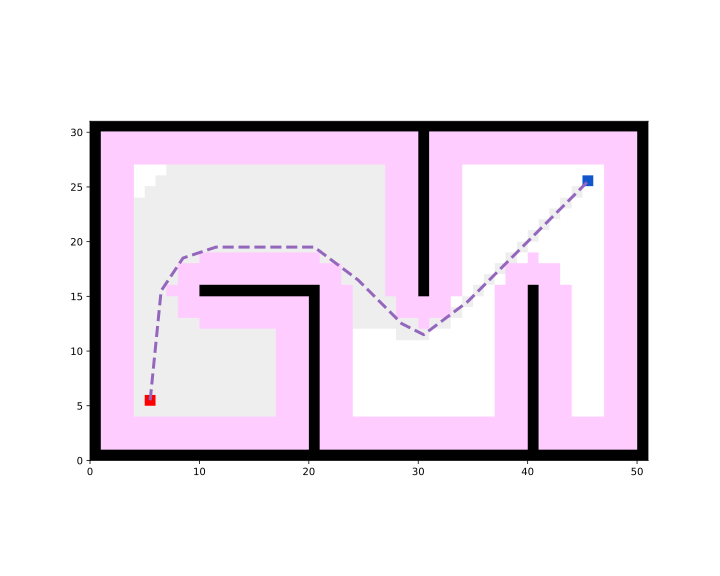 |  |
| Lazy Theta* | Implemented in V1.1.1, not migrated | Not implemented |
| S-Theta* | Implemented in V1.1.1, not migrated | Not implemented |
| Anya | Not implemented | Not implemented |
| Voronoi | Implemented in V1.1.1, not migrated | Not implemented |
| RRT | 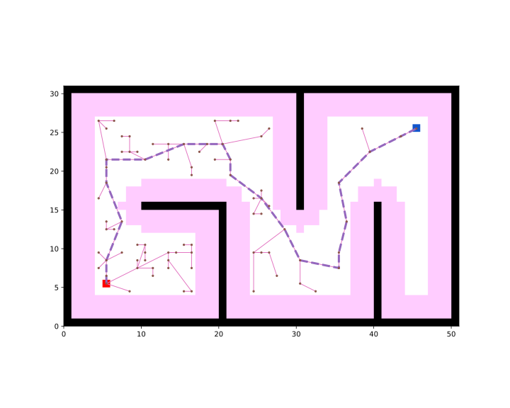 |  |
| RRT* | 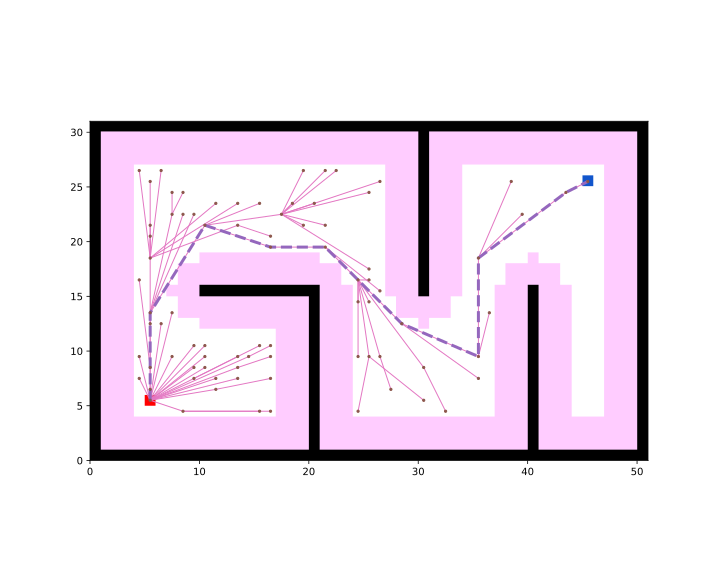 | 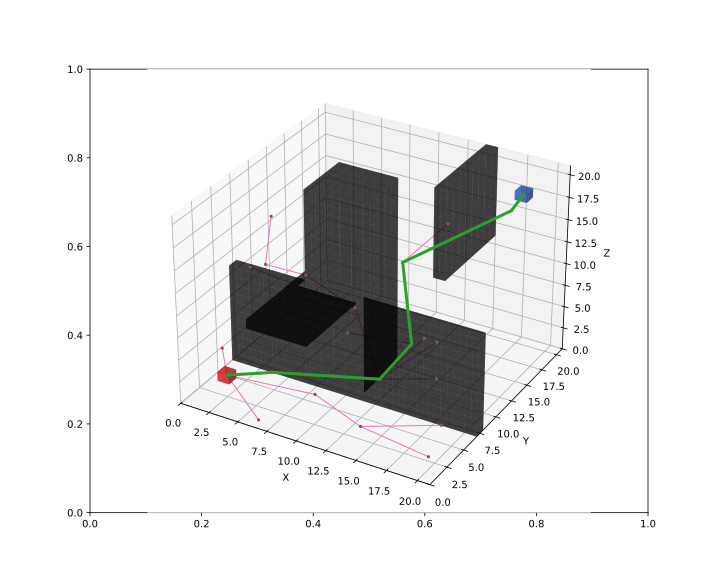 |
| Informed RRT | Implemented in V1.1.1, not migrated | Not implemented |
| RRT-Connect | Implemented in V1.1.1, not migrated | Not implemented |
| ACO | Implemented in V1.1.1, not migrated | Not implemented |
| GA | Implemented in V1.1.1, not migrated | Not implemented |
| PSO | Implemented in V1.1.1, not migrated | Not implemented |
Controller¶
We provide a toy simulator with simple physical simulation to test controllers (path-trakcers). The toy simulator supports multi-agents/multi-robots. The available robots include CircularRobot (Omnidirectional) and DiffDriveRobot (Only support moving forward and backward). Currently only 2D simulator is provided. 3D simulator has not been implemented.
In the following demos, the blue robot 1 is the CircularRobot, and the orange robot 2 is the DiffDriveRobot.
| Planner | 2D | 3D |
|---|---|---|
| Path Trakcer | Not implemented | |
| Pure Pursuit |  |
Not implemented |
| PID |  |
Not implemented |
| APF |  |
Not implemented |
| DWA |  |
Not implemented |
| RPP | Implemented in V1.1.1, not migrated | Not implemented |
| LQR | Implemented in V1.1.1, not migrated | Not implemented |
| MPC | Implemented in V1.1.1, not migrated | Not implemented |
| MPPI | Not implemented | Not implemented |
| TEB | Not implemented | Not implemented |
| Lattice | Not implemented | Not implemented |
| DQN | Not implemented | Not implemented |
| DDPG | Implemented in V1.0, not migrated | Not implemented |
Curve Generator¶
The visualization of the curve generators has not been implemented in current version. They can be visualized in V1.1.1.
| Planner | 2D | 3D |
|---|---|---|
| Polynomia | 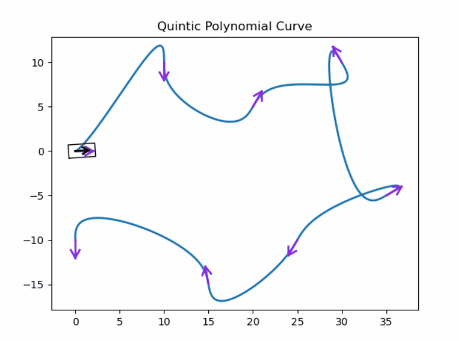 | Not implemented |
| Bezier | 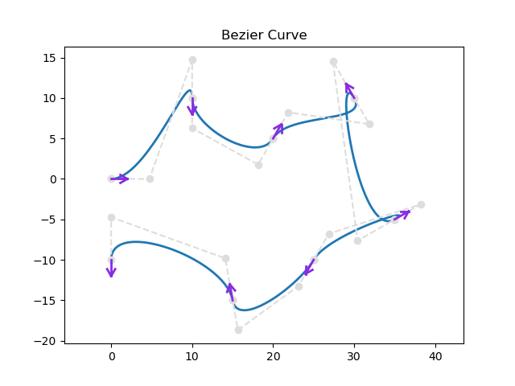 | Not implemented |
| Cubic Spline | 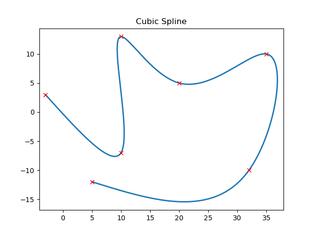 | Not implemented |
| BSpline | 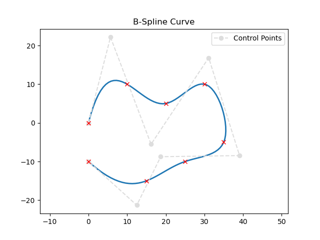 | Not implemented |
| Dubins | 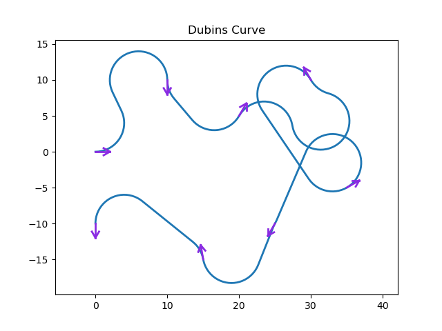 | Not implemented |
| Reeds-Shepp | 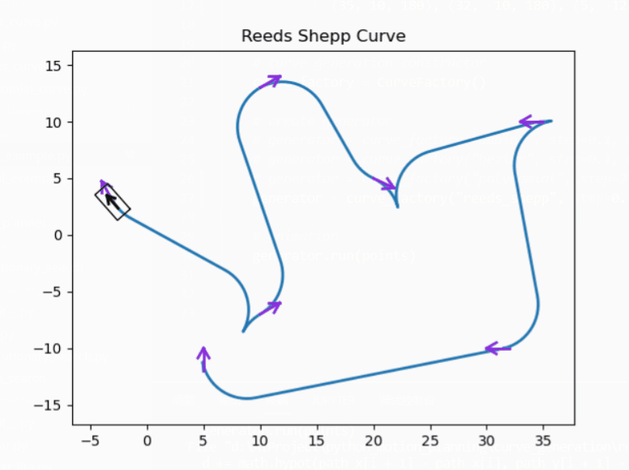 | Not implemented |
| Fem-Pos Smoother | 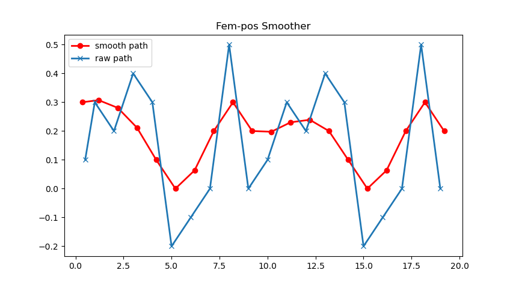 | Not implemented |
Contact¶
Long-term maintainers:
- @omigeft (Wu Maojia)
- @ai-winter (Yang Haodong)
You can contact us via the information provided on our profile.